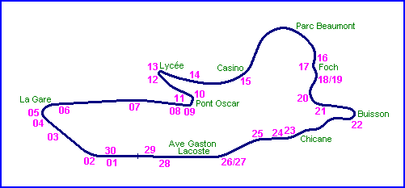
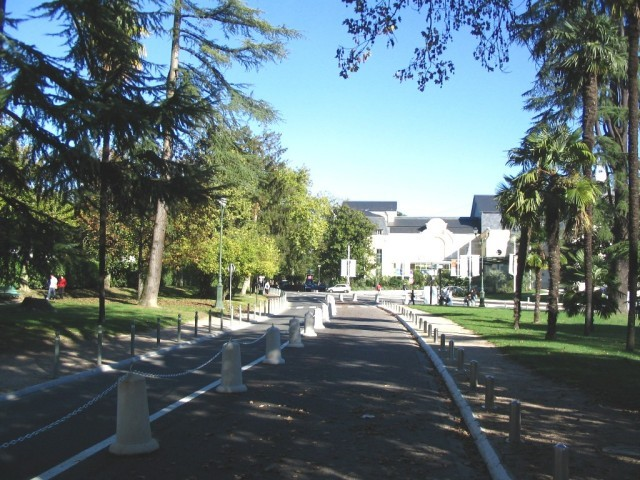
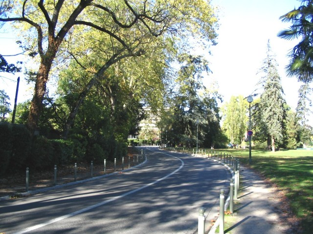
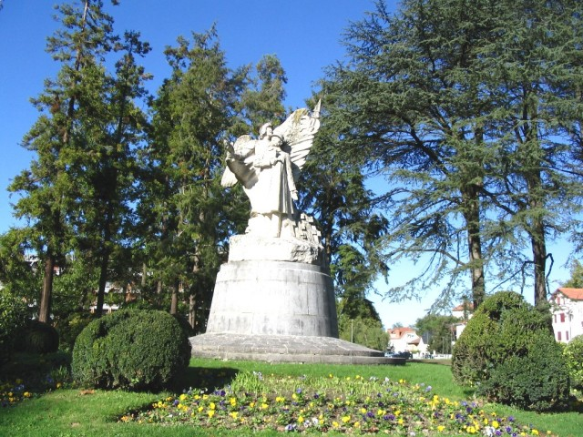
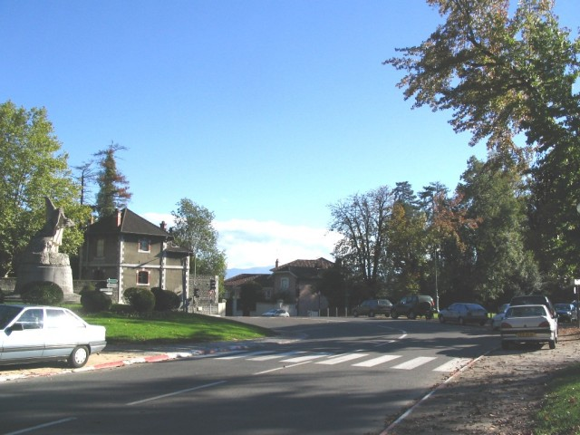
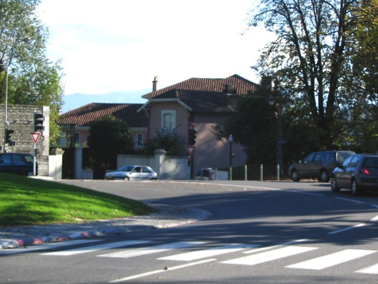
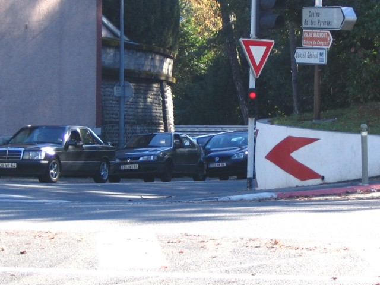
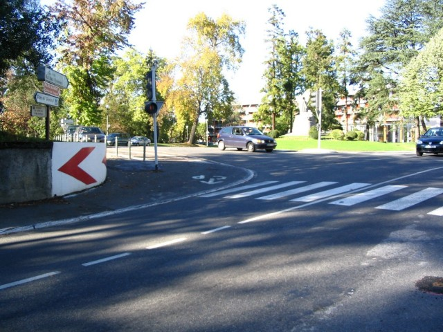

Pau - Casino, Parc Beaumont & Foch (Page 3 of 5)
|| Contents || La Gare | Pont Oscar & Lycée | Casino & Foch | Bussion & Chicane | Ave. Gaston Lacoste || Home

Numbers on map indicate the location of where the photographs were taken.
Return to racingcircuits.net's Photo Archive Main Index

14 - Heading to the Casino,
Avenue Alfred de Musset (a 100/200 m section that you cannot drive clockwise today).

15 - Very fast esse of the Parc
Beaumont.

16 - Maréchal Foch statue.

17-A - Foch complex. The
most difficult corner. The braking zone is in the preceding long right curve. It's a
left-right esse, but the road is bumpy because here the circuit begins to go downhill. The
apex of the right curve is invisible (just in the middle of the photo), and is marked by a
cone during races (see the red light). Foch statue stands on the left.

17-B - Foch complex, at the apex of the left
curve.

17-C - Foch complex, at the apex of the
right curve.

18 - Foch complex looking back.
Photographs & text ©Michel Marti. Reproduced here with kind permission.